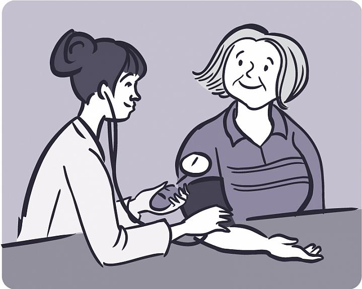

Enero de 2016
La presión arterial importa
Mantenga la hipertensión bajo control
Aproximadamente 1 de cada 3 adultos estadounidenses tiene presión arterial alta, pero muchos no lo saben. A la presión arterial alta a veces se la llama el "asesino silencioso", porque si bien no suele presentar síntomas, puede provocar enfermedades que ponen en riesgo la vida, como un ataque cardíaco o un accidente cerebrovascular. La buena noticia es que la presión arterial alta, o hipertensión, con frecuencia se puede prevenir o tratar. Un diagnóstico precoz y cambios sencillos hacia una vida más saludable pueden evitar que la presión arterial alta afecte gravemente su salud.
El flujo de sangre normal lleva nutrientes y oxígeno a todas las partes del cuerpo, incluidos órganos importantes como el corazón, el cerebro y los riñones. Los latidos del corazón ayudan a empujar la sangre a través de la vasta red de vasos sanguíneos, grandes y pequeños. A su vez, los vasos sanguíneos se ajustan continuamente. Se vuelven más estrechos o más anchos para que la presión se mantenga y para ayudar a que la sangre fluya a un ritmo saludable.
Es normal que la presión arterial suba y baje en el correr del día. La presión se ve afectada por la hora del día, el ejercicio, los alimentos que usted ingiere, el estrés y otros factores. Sin embargo, si la presión se mantiene demasiado alta durante demasiado tiempo pueden surgir problemas.
La presión arterial alta puede hacer que el corazón trabaje de más y pierda fuerza. Un flujo de sangre muy potente puede dañar los vasos sanguíneos, debilitarlos y hacer que se vuelvan rígidos o más estrechos. Con el paso del tiempo, la hipertensión puede dañar varios órganos importantes, entre ellos el corazón, los riñones, el cerebro y los ojos.
"La hipertensión es uno de los principales factores de riesgo de muerte y de discapacidad a nivel mundial", dice el Dr. Paul Whelton, experto en hipertensión y enfermedad renal de la Universidad de Tulane. "La presión arterial alta aumenta el riesgo de tener un ataque cardíaco, una insuficiencia cardíaca, un accidente cerebrovascular o una enfermedad renal".
Todos, incluso los niños, pueden desarrollar presión arterial alta. Pero el riesgo de hipertensión aumenta con la edad. "Después de los 60 años, aproximadamente dos tercios de la población se ven afectados por la hipertensión", dice Whelton.
El exceso de peso o tener antecedentes familiares de presión arterial alta también aumenta el riesgo de desarrollar hipertensión.
Los afroamericanos son especialmente propensos a tener hipertensión. En comparación con los adultos estadounidenses caucásicos o de origen hispano, los afroamericanos tienden a desarrollar hipertensión a edades más tempranas y a tener un promedio de presión arterial más alto.
Dado que no suele presentar síntomas, la única manera de verificar si usted tiene hipertensión es mediante una prueba de la presión arterial. Este procedimiento fácil e indoloro implica colocar un brazalete inflable con un tensiómetro alrededor de la parte superior del brazo para apretar los vasos sanguíneos. Luego, un proveedor de cuidados de la salud puede usar un estetoscopio para escuchar su pulso a medida que deja salir el aire del brazalete, o la presión se puede medir con un dispositivo automático.
La presión arterial se indica con dos números. El primer número representa la presión en los vasos sanguíneos cuando el corazón late (llamada presión sistólica). El segundo es la presión cuando el corazón se relaja y se llena de sangre (presión diastólica). En general, los expertos están de acuerdo en que la presión arterial más segura, o "normal", es de 120/80 o menos, es decir, que la presión arterial sistólica sea de 120 o menos y la presión diastólica de 80 o menos.
"La hipertensión se define como tener una presión arterial promedio superior a 140/90", dice el Dr. Lawrence Fine de los NIH, quien supervisa las investigaciones sobre el tratamiento y la prevención de la hipertensión. Dado que la presión arterial puede variar de un día a otro, el diagnóstico de hipertensión suele basarse en un promedio de 2 o más lecturas obtenidas en 2 ocasiones o más.
Si la presión arterial se encuentra en un rango entre "normal" e "hipertensión", a veces se la llama prehipertensión. Las personas con prehipertensión son más propensas a terminar desarrollando presión arterial alta si no toman medidas preventivas.
"Sabemos que podemos prevenir la presión arterial alta mediante una dieta saludable, la pérdida de peso y la actividad física", dice Whelton. "También la podemos tratar, y de manera efectiva".
Si le diagnostican presión arterial alta, su médico le indicará un plan de tratamiento. Es probable que le recomiende introducir cambios saludables en su estilo de vida (véase el cuadro "Elecciones inteligentes"). También podría tener que tomar medicamentos. El objetivo del tratamiento es reducir la presión arterial lo suficiente para evitar problemas más graves.
¿Cuánto debería bajar su presión arterial? La respuesta depende de muchos factores, por lo que es importante que trabaje junto con su médico para determinar los objetivos de presión arterial. Los lineamientos actuales recomiendan apuntar a una presión sistólica por debajo de 140. Estos lineamientos médicos a veces se ajustan según los resultados de las nuevas investigaciones.
Recientemente, un amplio estudio financiado por los NIH descubrió que apuntar a una presión sistólica mucho más baja — de 120 o menos — podría ser beneficioso, al menos en algunas personas. Este estudio observó a adultos de 50 años y más con un riesgo alto de enfermedad cardiovascular, pero que no tenían diabetes. La mitad tenía como meta alcanzar una presión sistólica de 120. La otra mitad tenía como meta alcanzar una presión de 140.
El estudio se cerró antes de tiempo, después de 3 años, cuando se observaron claros beneficios en el grupo con presión arterial más baja. "Al realizar un tratamiento que apuntaba a alcanzar una presión de 120, el riesgo de desarrollar una complicación cardiovascular, como un ataque cardíaco o un accidente cerebrovascular, se redujo en un 25%, y el riesgo de muerte por cualquier causa se redujo en un 27%", dice Fine. Sin embargo, el grupo con la meta de presión arterial más baja tendió a necesitar un medicamento adicional para controlar la presión. También tuvo más hospitalizaciones por efectos secundarios, entre ellos, presión arterial baja, desmayos y posible daño renal.
"Los resultados obtenidos hasta la fecha sugieren que las personas de más edad con hipertensión y un riesgo más alto de enfermedad cardiovascular podrían beneficiarse de tener como meta una presión arterial más baja. Pero también podría haber desventajas, y cada paciente es distinto", dice Whelton. "Los investigadores generan evidencia para que los proveedores de cuidado de la salud cuenten con toda la información necesaria para hablar con sus pacientes sobre los objetivos de presión arterial".
Estudios financiados por los NIH mostraron claramente que los cambios saludables en el estilo de vida pueden mejorar la presión arterial. "Incluso hacer cambios pequeños a lo largo del tiempo pueden ayudar", dice Kathryn McMurry, experta en ciencias de la nutrición de los NIH. "En términos de dieta, nuestro mejor consejo es seguir el plan de alimentación DASH".
El nombre DASH es un acrónimo que proviene del inglés Dietary Approaches to Stop Hypertension (Enfoques dietéticos para detener la hipertensión). "No es una dieta para realizar durante un período corto, sino un plan de alimentación que se integra a un estilo de vida saludable y que continúa durante toda la vida", dice McMurry.
El plan de alimentación DASH no requiere alimentos especiales. En cambio, establece objetivos nutricionales diarios y semanales. Es rico en frutas y verduras, granos integrales y productos lácteos descremados, pero bajo en grasas saturadas y azúcar agregado.
"La dieta DASH es beneficiosa incluso para personas con presión arterial normal o para aquellos que tienen prehipertensión. Puede ayudar a evitar que la presión arterial siga avanzando y llegue a niveles más altos", dice McMurry. Conozca más sobre la dieta DASH en https://www.nlm.nih.gov/medlineplus/spanish/dashdiet.html.
Referencia
A Randomized Trial of Intensive versus Standard Blood-Pressure Control. SPRINT Research Group. N Engl J Med. 2015 Nov 26;373(22):2103-16. doi: 10.1056/NEJMoa1511939. Publicado electrónicamente el 9 de noviembre de 2015. PMID: 26551272.
Información relativa
Obtenga más información
View this article in English:
Blood Pressure Matters: Keep Hypertension in Check
Elecciones sabias
Para una presión arterial saludable
- Mantenga un peso saludable. Pregúntele a su médico si debe bajar de peso.
- Haga actividad física. Muévase al menos 30 minutos la mayoría de los días de la semana.
- Lleve una dieta saludable. Elija un plan de alimentación rico en frutas y verduras, granos integrales y productos lácteos descremados, pero con bajo contenido en grasas saturadas y azúcar agregado.
- Reduzca el consumo de sal. Muchos estadounidenses consumen más sodio (que se encuentra en la sal) del que necesitan. La mayoría de la sal proviene de alimentos procesados (como las sopas o los productos horneados listos para consumir).
- No beba alcohol o consúmalo con moderación. Los hombres no deben consumir más de dos tragos por día; las mujeres, no más de un trago por día.
- No fume. Fumar aumenta el riesgo de enfermedades cardíacas, accidentes cerebrovasculares y otros problemas de salud.
- Duerma bien por la noche. Informe a su médico si le han dicho que ronca o que parece que dejara de respirar durante un instante mientras duerme, ya que podrían ser signos de apnea. Tratar la apnea del sueño y dormir bien por la noche pueden reducir la presión arterial.
- Tome los medicamentos recetados tal como se le indicó. Incluso si necesita medicamentos para ayudar a bajar la presión arterial, deberá introducir los cambios de estilo de vida que se describen arriba.